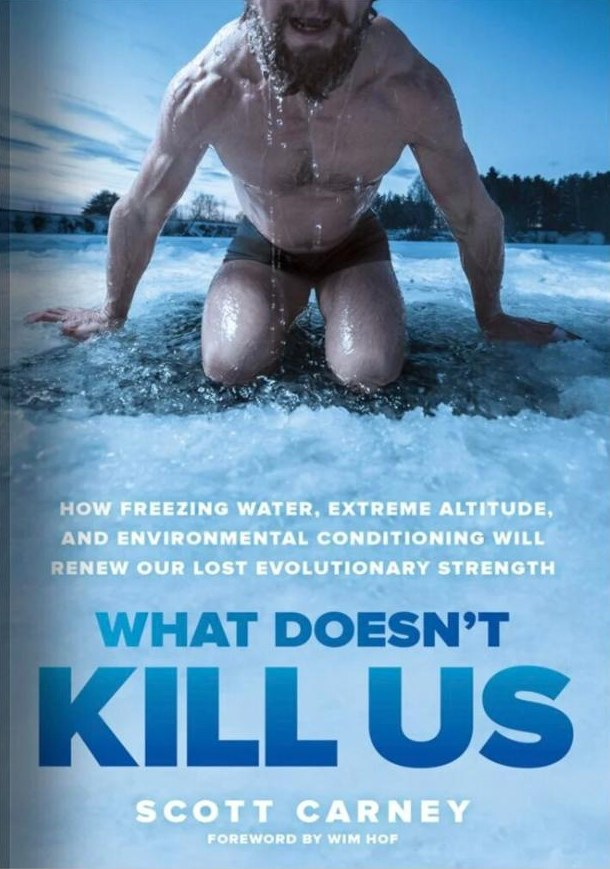

Book · 2017 · New York Times bestseller
What Doesn’t Kill Us
How Freezing Water, Extreme Altitude, and Environmental Conditioning Will Renew Our Lost Evolutionary Strength
Ice water, Wim Hof’s breathing, and a 28-hour climb up Kilimanjaro in nothing but running shorts: an investigation into the evolutionary strength we lost to modern comfort.
About the book
What Doesn't Kill Us, a New York Times bestseller, traces our evolutionary journey back to a time when survival depended on how well we adapted to the environment around us.
Our ancestors crossed deserts, mountains, and oceans without even a whisper of what anyone today might consider modern technology. Those feats of endurance now seem impossible in an age where we take comfort for granted. But what if we could regain some of our lost evolutionary strength by simulating the environmental conditions of our forebears?
Investigative journalist and anthropologist Scott Carney takes up the challenge to find out: Can we hack our bodies and use the environment to stimulate our inner biology? Helping him in his search for the answers is Dutch fitness guru Wim Hof, whose ability to control his body temperature in extreme cold has sparked a whirlwind of scientific study. Carney also enlists input from an Army scientist, a world-famous surfer, the founders of an obstacle course race movement, and ordinary people who have documented how they have cured autoimmune diseases, lost weight, and reversed diabetes. In the process, he chronicles his own transformational journey as he pushes his body and mind to the edge of endurance, a quest that culminates in a record-bending, 28-hour climb to the snowy peak of Mt. Kilimanjaro wearing nothing but a pair of running shorts and sneakers.
An ambitious blend of investigative reporting and participatory journalism, What Doesn't Kill Us explores the true connection between the mind and the body and reveals the science that allows us to push past our perceived limitations.
 The Wedge
The Wedge The Enlightenment Trap
The Enlightenment Trap The Vortex
The Vortex Dream
Dream The Red Market
The Red Market